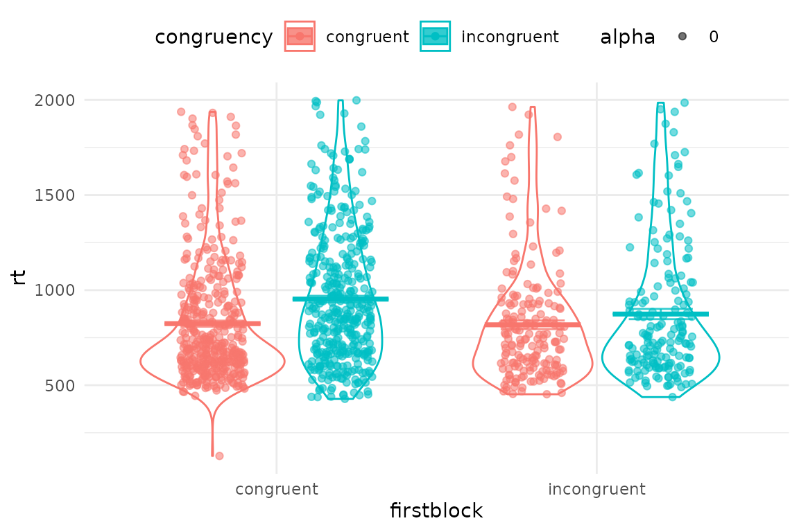
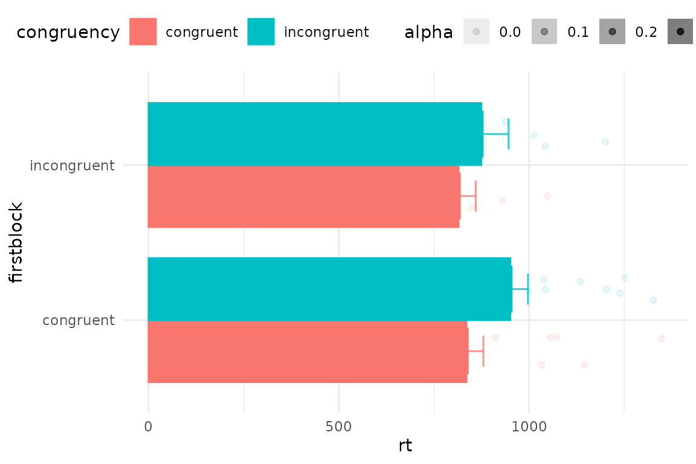
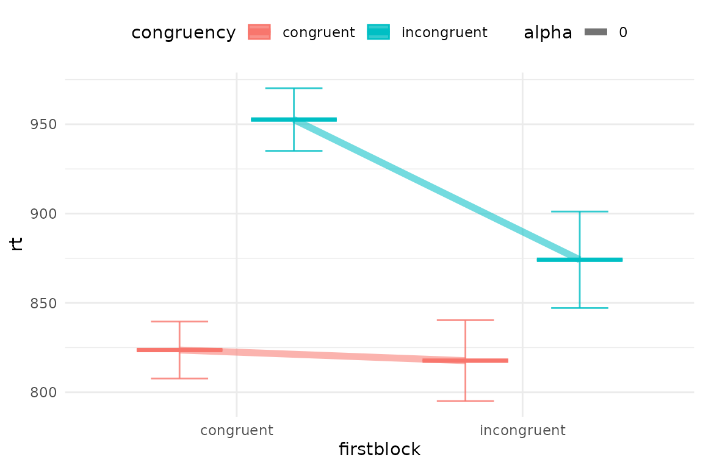

This is a toolbox for behavioural data. It processes raw downloads from gorilla, preps behavioural datas for analysis and extracts and scores information from questionnaires. Performs basic plotting of RDIs (pirate plots), and correlations from raw data and ANOVAs and mixed models.
Here’s how to get the latest version of the toolbox
devtools::install_github("dcr-eyethink/eyethinkdata")Importing data from gorilla
There are several functions all beginning with data_ that read in multiple data files and merge them into an R object. The most commonly used is data_collator_gorilla(). You pass it the name of a folder that contains downloads from gorilla. These downloads can be .zip files or unzipped folders that themselves contain gorilla .csv files. For example:
To run the function, tell it the name of the folder that contains the downloaded items, or leave it blank and your OS will ask you to choose the folder.
## Loading required package: ggplot2## Loading required package: data.table
data <- data_collator_gorilla("gorilla_data")Remember to give this function a folder that contains other folders that have the raw data in them. So now you have a list called data that contains several data.tables.
data$data_task contains all of the data from you gorilla tasks, the blue blobs in your experiment. This is the raw data from gorilla all collated together, with a few other columns added. For example, pid is the participant identity (anonymized). rt is the reaction time column.
| pid | lid | filename | Event.Index | UTC.Timestamp | UTC.Date.and.Time | Local.Timestamp | Local.Timezone | Local.Date.and.Time | Experiment.ID | Experiment.Version | Tree.Node.Key | Repeat.Key | Schedule.ID | Participant.Public.ID | Participant.Private.ID | Participant.Starting.Group | Participant.Status | Participant.Completion.Code | Participant.External.Session.ID | Participant.Device.Type | Participant.Device | Participant.OS | Participant.Browser | Participant.Monitor.Size | Participant.Viewport.Size | Checkpoint | Room.ID | Room.Order | Task.Name | Task.Version | Spreadsheet | Trial.Number | Screen.Number | Screen.Name | Zone.Name | Zone.Type | Reaction.Time | Response | Attempt | Correct | Incorrect | Dishonest | X.Coordinate | Y.Coordinate | Timed.Out | Spreadsheet.Name | randomise_blocks | display | randomise_trials | ImageLeft | ImageRight | ImageCentre | TextLeft | TextRight | TextCentre | Answer | OrLeft | OrRight | TextLeft1 | TextRight1 | TextRight2 | TextLeft2 | X | metadata | metadata.1 | rt | UTC.Date | Local.Date | randomiser.g1a6 | randomiser.62yd |
|---|---|---|---|---|---|---|---|---|---|---|---|---|---|---|---|---|---|---|---|---|---|---|---|---|---|---|---|---|---|---|---|---|---|---|---|---|---|---|---|---|---|---|---|---|---|---|---|---|---|---|---|---|---|---|---|---|---|---|---|---|---|---|---|---|---|---|---|---|---|---|
| 2874231 | 0dxt32ut | data_exp_39476-v1_task-3fjs.csv | 1 | 1.611753e+12 | 27/01/2021 13:06:09 | 1.611753e+12 | 0 | 27/01/2021 13:06:09 | 39476 | 1 | task-3fjs | NA | 9432363 | 0dxt32ut | 2874231 | NA | complete | NA | NA | computer | Desktop or Laptop | Mac OS 11.1.0 | Chrome 88.0.4324.96 | 1440x900 | 1434x638 | NA | NA | NA | IAT_sex_topics | 3 | Spreadsheet1 | BEGIN TASK | NA | NA | NA | NA | NA | NA | NA | 0 | 1 | 0 | NA | NA | NA | NA | NA | NA | NA | NA | NA | NA | NA | NA | NA | NA | NA | NA | NA | NA | NA | NA | NA | NA | NA | NA | NA | NA | NA | NA |
| 2874231 | 0dxt32ut | data_exp_39476-v1_task-3fjs.csv | 2 | 1.611753e+12 | 27/01/2021 13:06:18 | 1.611753e+12 | 0 | 27/01/2021 13:06:18 | 39476 | 1 | task-3fjs | NA | 9432363 | 0dxt32ut | 2874231 | NA | complete | NA | NA | computer | Desktop or Laptop | Mac OS 11.1.0 | Chrome 88.0.4324.96 | 1440x900 | 1434x638 | NA | NA | NA | IAT_sex_topics | 3 | Spreadsheet1 | 1 | 1 | Screen 1 | button | continue_button | 8867.000 | NA | NA | 0 | 1 | 0 | NA | NA | NA | Spreadsheet1 | NA | task description | NA | NA | NA | NA | NA | NA | NA | NA | NA | NA | NA | NA | NA | NA | 1 | NA | NA | 8867.000 | NA | NA | NA | NA |
| 2874231 | 0dxt32ut | data_exp_39476-v1_task-3fjs.csv | 3 | 1.611753e+12 | 27/01/2021 13:06:34 | 1.611753e+12 | 0 | 27/01/2021 13:06:34 | 39476 | 1 | task-3fjs | NA | 9432363 | 0dxt32ut | 2874231 | NA | complete | NA | NA | computer | Desktop or Laptop | Mac OS 11.1.0 | Chrome 88.0.4324.96 | 1440x900 | 1434x638 | NA | NA | NA | IAT_sex_topics | 3 | Spreadsheet1 | 1 | 1 | Screen 1 | button | continue_keyboard | 16378.165 | NA | NA | 0 | 1 | 0 | NA | NA | NA | Spreadsheet1 | NA | instructions | NA | NA | NA | NA | NA | NA | NA | NA | NA | NA | NA | NA | NA | NA | 2 | NA | NA | 16378.165 | NA | NA | NA | NA |
| 2874231 | 0dxt32ut | data_exp_39476-v1_task-3fjs.csv | 4 | 1.611753e+12 | 27/01/2021 13:06:42 | 1.611753e+12 | 0 | 27/01/2021 13:06:42 | 39476 | 1 | task-3fjs | NA | 9432363 | 0dxt32ut | 2874231 | NA | complete | NA | NA | computer | Desktop or Laptop | Mac OS 11.1.0 | Chrome 88.0.4324.96 | 1440x900 | 1434x638 | NA | NA | NA | IAT_sex_topics | 3 | Spreadsheet1 | 1 | 1 | Screen 1 | Zone9 | continue_keyboard | 7291.585 | NA | NA | 0 | 1 | 0 | NA | NA | NA | Spreadsheet1 | NA | prepare1 | NA | NA | NA | NA | NA | NA | NA | NA | NA | NA | female | male | NA | NA | 3 | practice_words | practice_words | 7291.585 | NA | NA | NA | NA |
| 2874231 | 0dxt32ut | data_exp_39476-v1_task-3fjs.csv | 5 | 1.611753e+12 | 27/01/2021 13:06:43 | 1.611753e+12 | 0 | 27/01/2021 13:06:43 | 39476 | 1 | task-3fjs | NA | 9432363 | 0dxt32ut | 2874231 | NA | complete | NA | NA | computer | Desktop or Laptop | Mac OS 11.1.0 | Chrome 88.0.4324.96 | 1440x900 | 1434x638 | NA | NA | NA | IAT_sex_topics | 3 | Spreadsheet1 | 1 | 1 | Screen 1 | Zone9 | response_keyboard | 1059.960 | right | 1 | 1 | 0 | 0 | NA | NA | NA | Spreadsheet1 | NA | trials | 1 | NA | NA | NA | NA | NA | Jeffrey | right | NA | NA | female | male | NA | NA | 14 | practice_words | practice_words | 1059.960 | NA | NA | NA | NA |
| 2874231 | 0dxt32ut | data_exp_39476-v1_task-3fjs.csv | 6 | 1.611753e+12 | 27/01/2021 13:06:44 | 1.611753e+12 | 0 | 27/01/2021 13:06:43 | 39476 | 1 | task-3fjs | NA | 9432363 | 0dxt32ut | 2874231 | NA | complete | NA | NA | computer | Desktop or Laptop | Mac OS 11.1.0 | Chrome 88.0.4324.96 | 1440x900 | 1434x638 | NA | NA | NA | IAT_sex_topics | 3 | Spreadsheet1 | 1 | 2 | Screen 2 | fixation | fixation | 699.972 | NA | NA | 0 | 1 | 0 | NA | NA | NA | Spreadsheet1 | NA | trials | 1 | NA | NA | NA | NA | NA | Jeffrey | right | NA | NA | female | male | NA | NA | 14 | practice_words | practice_words | 699.972 | NA | NA | NA | NA |
There is another data.table called data$data_q which has all the info from your experiment questionnaires. we will deal with that in the questionnaire data section below. Note that you can download questionnaire data from gorilla website in wide (one row per person) or long format. Whichever you choose, this function will compile your data from different questionnaires, adding more columns for the wide format, and more rows for the long. The type is also returned in data_qtype. Wide format might be more useful if you are going to immediately analyse the data yourself, especially if using excel or SPSS. If you are going to do more processing using eyethinkdata or other r functions, then choose long format and look at the setions below.
Finally, if you used the mouse or eye tracking plugins, that data will be in data$data_continuous
Task data - extracting stimuli, conditions and behaviour
We’re going to extract, plot and analyse data from an example IAT experiment. Your first step in analysing your data will be to pick out the rows and columns you want for your experiment. These will contain information about the trial conditions and stimuli, and information about the participants’ responses. First we identify the rows that have the key events, then we pick the columns that have the important information. Here’s how I would filter the IAT data
iat_data <- data$data_task[metadata %in% c("congruent","incongruent") & # row selection
Attempt==1 & display=="trials", # row selection
.(pid, trial=Trial.Number, # columns
congruency=metadata,accuracy=Correct,rt, # columns
item=paste0(na.omit(ImageCentre),na.omit(TextCentre)))]
# figure out what block came first for each person
iat_data[,firstblock:=.SD[c(1)]$congruency,by=pid]
knitr::kable(head(iat_data))| pid | trial | congruency | accuracy | rt | item | firstblock |
|---|---|---|---|---|---|---|
| 2874231 | 25 | congruent | 1 | 747.500 | English | congruent |
| 2874231 | 26 | congruent | 1 | 596.165 | Jeffrey | congruent |
| 2874231 | 27 | congruent | 1 | 586.750 | Emily | congruent |
| 2874231 | 28 | congruent | 1 | 934.665 | Classics | congruent |
| 2874231 | 29 | congruent | 1 | 585.710 | Geology | congruent |
| 2874231 | 30 | congruent | 1 | 606.330 | Paul | congruent |
Plotting data
Now we can plot the data with the generic plotting function, pirateye(). You name the columns/conditions that you want to plot on the x axis, and as a colour contrast.
pirateye(data=iat_data[accuracy==1 & rt<2000], # trim incorrect trials and outliers
colour_condition = "congruency",x_condition = "firstblock",dv = "rt")
Since we have a dot per trial, this is a bit crowded. You can first average over people, and also turn elements on and off in pirateye, and set options such as flipping the coordinates
pirateye(data=iat_data[accuracy==1 & rt<2000],
colour_condition = "congruency",x_condition = "firstblock",dv = "rt",
pid_average = T, # average over participants' conditions
violin = F,bar=T,cflip = T) # no violins but draw some bars and flip axes
Or we could connect conditions with lines
pirateye(data=iat_data[accuracy==1 & rt<2000],
colour_condition = "congruency",x_condition = "firstblock",dv = "rt",
dots=F,line=T,violin=F) # no dots but draw some bars
Plotting ANOVA and mixed models
We can analyse the data with afex aov_ex package, and then plot the results with plot_model(). This output the ANOVA table and means tables for all main effects and interactions, and shows post hoc results comparing the effects of the first named condition over levels of the second.
anv <- afex::aov_ez(data=iat_data[accuracy==1 & rt<2000],fun_aggregate = mean,
id="pid",between="firstblock",within="congruency",dv="rt")
plot_model(anv,outp = NULL,bars=F) # you can pass pirateye parameters to this function ##
## Univariate Type III Repeated-Measures ANOVA Assuming Sphericity
##
## Sum Sq num Df Error SS den Df F value Pr(>F)
## (Intercept) 34517501 1 1727205 26 519.5995 < 2e-16 ***
## firstblock 26906 1 1727205 26 0.4050 0.53007
## congruency 87704 1 223885 26 10.1851 0.00368 **
## firstblock:congruency 8705 1 223885 26 1.0109 0.32396
## ---
## Signif. codes: 0 '***' 0.001 '**' 0.01 '*' 0.05 '.' 0.1 ' ' 1
##
##
## Main effects of congruency
## congruency emmean SE df lower.CL upper.CL
## congruent 825 38.0 26 747 903
## incongruent 913 42.9 26 825 1001
##
## Results are averaged over the levels of: firstblock
## Confidence level used: 0.95
## contrast estimate SE df t.ratio p.value
## congruent - incongruent -87.6 27.4 26 -3.191 0.0037
##
## Results are averaged over the levels of: firstblock##
##
## Main effects of firstblock
## firstblock emmean SE df lower.CL upper.CL
## congruent 893 40.8 26 809 977
## incongruent 845 64.4 26 712 977
##
## Results are averaged over the levels of: congruency
## Confidence level used: 0.95
## contrast estimate SE df t.ratio p.value
## congruent - incongruent 48.5 76.2 26 0.636 0.5301
##
## Results are averaged over the levels of: congruency##
##
## Interactions of congruency firstblock
## congruency firstblock emmean SE df lower.CL upper.CL
## congruent congruent 836 40.6 26 752 919
## incongruent congruent 951 45.9 26 856 1045
## congruent incongruent 815 64.2 26 683 947
## incongruent incongruent 875 72.6 26 726 1024
##
## Confidence level used: 0.95
## contrast estimate SE df t.ratio
## congruent congruent - incongruent congruent -115.2 29.3 26 -3.926
## congruent congruent - congruent incongruent 20.9 75.9 26 0.276
## congruent congruent - incongruent incongruent -39.1 83.1 26 -0.470
## incongruent congruent - congruent incongruent 136.1 78.9 26 1.726
## incongruent congruent - incongruent incongruent 76.1 85.8 26 0.887
## congruent incongruent - incongruent incongruent -60.0 46.4 26 -1.293
## p.value
## 0.0030
## 0.9925
## 0.9650
## 0.3312
## 0.8117
## 0.5753
##
## P value adjustment: tukey method for comparing a family of 4 estimates## $model_summary
##
## Univariate Type III Repeated-Measures ANOVA Assuming Sphericity
##
## Sum Sq num Df Error SS den Df F value Pr(>F)
## (Intercept) 34517501 1 1727205 26 519.5995 < 2e-16 ***
## firstblock 26906 1 1727205 26 0.4050 0.53007
## congruency 87704 1 223885 26 10.1851 0.00368 **
## firstblock:congruency 8705 1 223885 26 1.0109 0.32396
## ---
## Signif. codes: 0 '***' 0.001 '**' 0.01 '*' 0.05 '.' 0.1 ' ' 1
##
## $means_congruency
## congruency emmean SE df lower.CL upper.CL
## congruent 825 38.0 26 747 903
## incongruent 913 42.9 26 825 1001
##
## Results are averaged over the levels of: firstblock
## Confidence level used: 0.95
##
## $plot_congruency
##
## $means_firstblock
## firstblock emmean SE df lower.CL upper.CL
## congruent 893 40.8 26 809 977
## incongruent 845 64.4 26 712 977
##
## Results are averaged over the levels of: congruency
## Confidence level used: 0.95
##
## $plot_firstblock
##
## $means_congruency_firstblock
## congruency firstblock emmean SE df lower.CL upper.CL
## congruent congruent 836 40.6 26 752 919
## incongruent congruent 951 45.9 26 856 1045
## congruent incongruent 815 64.2 26 683 947
## incongruent incongruent 875 72.6 26 726 1024
##
## Confidence level used: 0.95
##
## $plot_congruency_firstblock
Finally, for the IAT there is a function `gorilla_iatanalysis()` that will do all the processing and analysis of task data we’ve done above in one step.
gorilla_iatanalysis(data)Questionnaire data
There are various functions for processing questionnaire data that all begin gorill_q. Some are specialised for particular surveys, such as the TIPI personality test or the BMIS mood scale. Others help code fiddly things like rank scores or checkboxes.
The basic gorilla_q function just parses the answers to all questions in a survey and outputs them one row per participant. Gorilla gives you the text answers in a quanitzed form too. If we don’t need that we can strip them out with strip=“quant” (or conversely “qual”). If you leave qlist blank, it will run this through all the task.names in your gorilla data_q, or you can specifc one questionnaire only.
gorilla_q_parse(data,qlist = "basic demographics",strip="quant" )## pid Sex age
## <fctr> <char> <num>
## 1: 3735601 Male 58
## 2: 2874231 Male 51
## 3: 2878349 Male 53
## 4: 2887782 Female 24
## 5: 2902933 Female 45
## 6: 2906179 Female 22
## 7: 2912330 Female 37
## 8: 2921282 Male 41
## 9: 2921652 Male 38
## 10: 3730237 Female 57
## 11: 3731661 Female 38
## 12: 3734675 Female 51
## 13: 3734775 Female 42
## 14: 5891983 Female 41
## 15: 10068596 Female 23
## 16: 10106060 Female 44
## 17: 10110660 Female 35
## 18: 10107554 Male 29A more powerful function lets you use a key to score a survey, which is useful if you have lots of reversed scored items, or subscales to calculate. We have one, with the gorilla questionnaire name “Interpersonal Reactivity Index (Davies, 1983)”, so we can name that in qlist. This will generate a blank survey key and save it in the working directory in a folder called ‘survey_key’. This is what it looks like.
gorilla_q_keyed(data,qlist= "Interpersonal Reactivity Index (Davies, 1983)",keyout = T)## There is no key for: Interpersonal Reactivity Index (Davies, 1983)
## ... so I put a key for Interpersonal Reactivity Index (Davies, 1983) in working directory for you to edit
## Task.Name order Question.Key sum
## <char> <int> <char> <num>
## 1: Interpersonal Reactivity Index (Davies, 1983) 1 EC_1 1
## 2: Interpersonal Reactivity Index (Davies, 1983) 2 PT_1 1
## 3: Interpersonal Reactivity Index (Davies, 1983) 3 EC_2 1
## 4: Interpersonal Reactivity Index (Davies, 1983) 4 PT_2 1
## 5: Interpersonal Reactivity Index (Davies, 1983) 5 EC_3 1
## 6: Interpersonal Reactivity Index (Davies, 1983) 6 PT_3 1
## 7: Interpersonal Reactivity Index (Davies, 1983) 7 EC_4 1
## 8: Interpersonal Reactivity Index (Davies, 1983) 8 PT_4 1
## 9: Interpersonal Reactivity Index (Davies, 1983) 9 EC_5 1
## 10: Interpersonal Reactivity Index (Davies, 1983) 10 EC_6 1
## 11: Interpersonal Reactivity Index (Davies, 1983) 11 PT_5 1
## 12: Interpersonal Reactivity Index (Davies, 1983) 12 EC_7 1
## 13: Interpersonal Reactivity Index (Davies, 1983) 13 PT_6 1
## 14: Interpersonal Reactivity Index (Davies, 1983) 14 PT_7 1
## rev scaleName Subscore qual ignore
## <num> <char> <char> <num> <lgcl>
## 1: 8 IRID 0 NA
## 2: 8 IRID 0 NA
## 3: 8 IRID 0 NA
## 4: 8 IRID 0 NA
## 5: 8 IRID 0 NA
## 6: 8 IRID 0 NA
## 7: 8 IRID 0 NA
## 8: 8 IRID 0 NA
## 9: 8 IRID 0 NA
## 10: 8 IRID 0 NA
## 11: 8 IRID 0 NA
## 12: 8 IRID 0 NA
## 13: 8 IRID 0 NA
## 14: 8 IRID 0 NAYou can then edit it in excel or any text editor, and save it as .csv file.There is a row for every different survey item in the gorilla questionnaire, and each row is identified by Question.Key - what you wrote in the ‘key’ box when making the survey in gorilla. The order tells you how they appeared in gorilla (NA if they were randomised). You can change the numbers in the columns sum, ScaleNam, Subscore and qual, to score/summarize your survey.
Here’s what the columns mean: sum - how this item contributes to scoring: set to 1 to add up, -1 for reverse score. If you enter 0 then the answer won’t be used to compute score, but instead this answer will be reported by itself in its own column rev - if it is to be reversed scored, then subtract the answer from this number. eg assuming a 7 point scale, I’ve set this to 8 as default. ScaleName - you will end up with one row per person and a variable with this name (eg IQ) summarizing all items. You can have one or many different scales in the same questionnaire and key Subscore - you can break the scales down further into subscales. Name it here and it will also appear on output as a scored column (eg IQ_verbal) qual - If this item is a non numeric or qualitative response (eg a text box) then put a 1 here. It won’t be summarized but till also be reported in output in a column. If this is ignore - If the response matches this answer, then don’t use it in the scale calculation. This is used, eg for scales where 1-7 is the answer, but people can also enter 8 for ‘not applicable’.
Here’s a filled out version for our Interpersonal Reactivity Scale key
read.csv("survey_key complete/Interpersonal Reactivity Index (Davies, 1983).csv")## Task.Name Question.Key sum rev scaleName
## 1 Interpersonal Reactivity Index (Davies, 1983) EC_1 1 6 ECPT
## 2 Interpersonal Reactivity Index (Davies, 1983) PT_1 -1 6 ECPT
## 3 Interpersonal Reactivity Index (Davies, 1983) EC_2 -1 6 ECPT
## 4 Interpersonal Reactivity Index (Davies, 1983) PT_2 1 6 ECPT
## 5 Interpersonal Reactivity Index (Davies, 1983) EC_3 1 6 ECPT
## 6 Interpersonal Reactivity Index (Davies, 1983) PT_3 1 6 ECPT
## 7 Interpersonal Reactivity Index (Davies, 1983) EC_4 -1 6 ECPT
## 8 Interpersonal Reactivity Index (Davies, 1983) PT_4 -1 6 ECPT
## 9 Interpersonal Reactivity Index (Davies, 1983) EC_5 -1 6 ECPT
## 10 Interpersonal Reactivity Index (Davies, 1983) EC_6 1 6 ECPT
## 11 Interpersonal Reactivity Index (Davies, 1983) PT_5 1 6 ECPT
## 12 Interpersonal Reactivity Index (Davies, 1983) EC_7 1 6 ECPT
## 13 Interpersonal Reactivity Index (Davies, 1983) PT_6 1 6 ECPT
## 14 Interpersonal Reactivity Index (Davies, 1983) PT_7 1 6 ECPT
## Subscore qual
## 1 EC 0
## 2 PT 0
## 3 EC 0
## 4 PT 0
## 5 EC 0
## 6 PT 0
## 7 EC 0
## 8 PT 0
## 9 EC 0
## 10 EC 0
## 11 PT 0
## 12 EC 0
## 13 PT 0
## 14 PT 0Now you can parse and score the questionnaire using the same function.
gorilla_q_keyed(data,qlist= "Interpersonal Reactivity Index (Davies, 1983)",key_folder = "survey_key complete")## Key: <pid>
## pid ECPT ECPT_EC ECPT_PT
## <fctr> <num> <num> <num>
## 1: 4193722 40 20 20
## 2: 4193708 51 23 28
## 3: 4193719 47 21 26
## 4: 4217240 43 16 27
## 5: 4228549 69 34 35
## ---
## 126: 4263634 52 29 23
## 127: 4263630 57 32 25
## 128: 4249143 65 34 31
## 129: 4249146 47 24 23
## 130: 4228894 57 28 29You will get an output that has one row per person, and one column that scores all the answers, and additionally other columns for subscales or text answers.
Combining participant and trial data
There is a handy function called `pid_merge()` which combines two (or more) data sets, linking them by the value in pid (by default). You can use this to add trial data to participant data, or vice versa by passing two data sets to the function. Below I’ve parsed the demongraphic data from the IAT, and added to it mean reaction times per condition for each participant.
pid_merge( gorilla_q_parse(data,qlist = "basic demographics",strip = "quant" ),
dcast(iat_data[accuracy==1],pid~congruency,value.var = "rt",fun.aggregate = mean))## pid Sex age congruent incongruent
## <fctr> <char> <num> <num> <num>
## 1: 3735601 Male 58 1640.5217 1203.3750
## 2: 2874231 Male 51 643.6639 853.4889
## 3: 2878349 Male 53 1267.3662 1481.7693
## 4: 2887782 Female 24 875.6463 1064.9352
## 5: 2902933 Female 45 847.1602 1491.3670
## 6: 2906179 Female 22 765.9102 727.8968
## 7: 2912330 Female 37 649.1347 544.1992
## 8: 2921282 Male 41 2045.7631 1566.1163
## 9: 2921652 Male 38 808.0895 816.2686
## 10: 3730237 Female 57 2135.8733 1529.1154
## 11: 3731661 Female 38 664.1135 1047.7798
## 12: 3734675 Female 51 1139.0517 1379.3367
## 13: 3734775 Female 42 1088.6943 1379.9007
## 14: 5891983 Female 41 1125.5261 1449.6227
## 15: 10068596 Female 23 628.6100 779.1500
## 16: 10106060 Female 44 772.1818 797.4167
## 17: 10110660 Female 35 833.3333 1139.2400
## 18: 10107554 Male 29 781.2292 937.7167